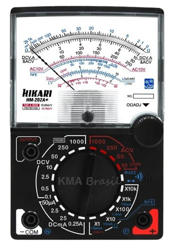
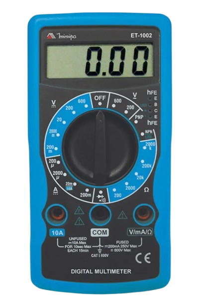

Multímetro
O que é um multímetro
Também chamado de multi medidor, é um dispositivo capaz de medir diversas grandezas elétricas.
Quais grandezas um multímetro consegue medir
O multímetro consegue medir tensão(V), corrente(A) e resistência(Ω). Dependendo da complexidade do aparelho, ele também consegue medir continuidade, temperatura e frequência.
Tipos de multímetro
Multímetro analógico: É um modelo mais antigo, que usa a energia do próprio circuito para mover um ponteiro sobre os números na tela, precisando olhar onde o ponteiro aponta para saber o resultado.

Multímetro digital: É o modelo mais moderno e utilizado atualmente. Transformando a energia em números, mostrando o valor em números exatos em uma tela digital.
